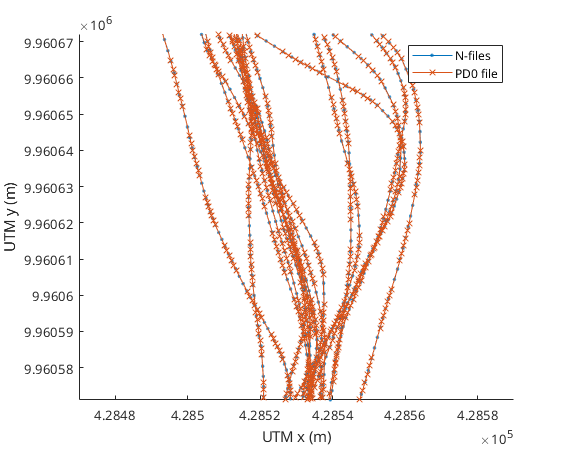

Horizontal positioning
The horizontal position of the ADCP can be either fixed for moored deployments or change as in vessel mounted deployments.
Contents
Moored deployment
Vessel mounted GPS positioning
The horizontal position of the ADCP can be controlled by setting the vertical_position_provider property in the ADCP object.
mmbend.horizontal_position_provider
ans = 1×2 heterogeneous ADCPHorizontalPosition (ProjectedCoordinatesFromViseaExtern, LatLonToUTM) array with no properties.
This property always contains objects of class ADCPHorizontalPosition. These objects specify the geographic location of the ADCP. In this case two horizontal position providers are given:
The first one is rdi specific and directly reads projected coordinates (i.e. in x,y coordinates in m) from the Visea extern files. The second one transforms latitude,longitude coordinates to UTM geographic coordinates. The order of the objects in the property sets the priority for where the positioning data will come from. In this case, the projected coordinates from Visea files will be prioritized over projected coordinates computed from lat,lon coordinates. To check which ones are being used we can used the has_data method:
mmbend.horizontal_position_provider.has_data(mmbend)
ans = 1×2 logical array 0 1
The first object returns false, the second true. This means that there are no coordinates available from the Visea extern files, so the projected coordinates are computed from lat,lon coordinates. Let's take a closer look at the LatLonToUTM object:
mmbend.horizontal_position_provider(2)
ans =
LatLonToUTM with properties:
description: 'UTM'
zone: 50
ll_provider: [5×1 LatLonProvider]
Particularly interesting is the ll_provider property:
mmbend.horizontal_position_provider(2).ll_provider
ans = 5×1 heterogeneous LatLonProvider (LatLonVisea, LatLonNfilesGGA, LatLonTfiles, ...) array with no properties.
This property is an array of LatLonProvider objects that provide the geographical coordinates from different sources. We can again use the has_data method to check which LatLonProvider object is providing the coordinates:
mmbend.horizontal_position_provider(2).ll_provider.has_data(mmbend)
ans = 5×1 logical array 0 1 0 0 1
Two objects can provide geographical data, the second and the fifth. Since the order of the object is again indicating priority, the second object will used to provide the geographic coordinates. If we want to use the fifth, we can change the order of the objects in the ll_provider property. Let's look at the second LatLonProvider object:
mmbend.horizontal_position_provider(2).ll_provider(2)
ans = LatLonNfilesGGA with no properties.
This is a rdi.LatLonNfilesGGA object that retrieves the coordinates from the NMEA GGA strings in the navigation files (n.000 or .GPS files). Let's plot the track of the ADCP:
figure mmbend.plot_track('.-') set(gca,'xlim', 1.0e+05 *[4.2847 4.2859]) % zoom-in to part of the track

Changing the source of geographic coordinates
The geographic coordinates provided by the rdi.LatLonNfilesGGA object are converted to UTM coordinates by the LatLonToUTM object. Suppose we want to change the source of the geopgraphic coordinates we can do so by changing the ll_provider property of the LatLonToUTM object:
mmbend.horizontal_position_provider(2).ll_provider = rdi.LatLonGGA; mmbend.horizontal_position_provider(2).ll_provider
ans = LatLonGGA with no properties.
We now set the ll_provider property to a rdi.LatLonGGA object. This reads the coordinates from the NMEA GGA strings stored in the PD0 binary files. Let's plot again the track to see the difference
hold on mmbend.plot_track('x-') set(gca,'xlim', 1.0e+05 *[4.2847 4.2859]) % zoom-in to part of the track legend('N-files','PD0 file')
We can clearly see that the coordinates are different for the two sources. The PD0 stored coordinates have a problem (jumps in coordinates) related to a buffering problem in an old version of the WinRiver software. This problem is not present in the N-files based coordinates so we will set it back to N-files as the source:
mmbend.horizontal_position_provider(2).ll_provider = rdi.LatLonNfilesGGA; mmbend.horizontal_position_provider(2).ll_provider
ans = LatLonNfilesGGA with no properties.